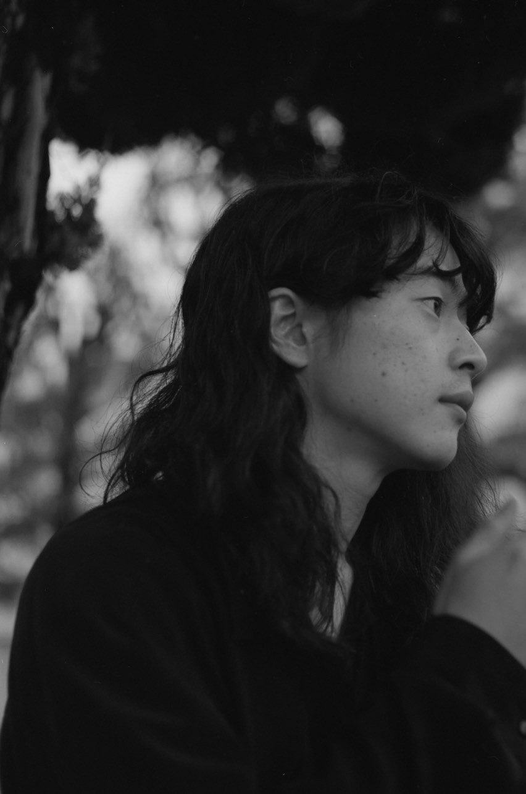

大学では建築学科に所属し、空間や意匠について学びました。次第に「建築という分野」そのものよりも、空間が人にどう作用し、どのような意味や体験を生むのかといった関係性の部分に関心が移っていきました。
また、制作や研究を通して、記録と記憶の違いについて考えるようになりました。記録は文字や図像によって事実を正確に伝える役割を持つ一方で、記憶には確定した伝達手段がなく、曖昧で抽象的な要素を含んでいます。
例えば会話の中で、「あの場所にはかつて○○があった」という情報は、人から人へと伝えられる記憶の一形態です。受け手はその言葉を手がかりに、当時の風景や生活を想像し、それを新たな記憶として蓄積していきます。このような記憶の伝達を、人ではなくモノを起点として行うことはできないだろうか、と考えるようになりました。
記憶的なモノは、単なる情報以上の存在であり、まるで物自体が何かを語りかけてくるような感覚を伴います。そこには、人が一方的に受け取るのではなく、人と物が関係を結び直すような対話的な感覚があり、その双方向性に関心を持ってきました。
大学を離れた後も、関心に応じて表現手段を変えながら制作を続けています。制作の出発点には思想やアイディアがあり、それを成立させる方法を探ってきました。3D、映像、写真、音といった分野はいずれも、その延長線上にあります。
プログラミングは、当初から明確な目的や完成像があって始めたものではありません。これまで扱ってきた3Dや映像、空間といった異なる表現をつなぐために、後から必要性として立ち上がってきた手段でした。仕組みや構造を通して個別の要素を関係づけ、全体として機能させることができる点に強い魅力を感じています。現在は、プログラミングを単なる実装手段ではなく、表現を成立させるための心臓部、あるいは異なる要素同士を結ぶ架け橋のようなものとして捉えています。
このサイトに掲載している制作物は、これまで取り組んできたことや、扱ってきた手法を整理して示すためのものです。個人的な思考や記憶を直接扱った表現よりも、実務や制作の中で培ってきたことや、実装・構成として何ができるのかが伝わるものを中心にまとめています。
ここに並ぶものが、自身の関心や制作のすべてを表しているわけではありませんが、やりたいことや解決したい課題を最初に置き、その実現に必要な構造や仕組みを考え、手段を選んで形にしていくという、目的から逆算する制作の進め方はこれまで一貫しています。今後は、これまでの試行錯誤を踏まえたうえで、より体験そのものに焦点を当てた表現にも取り組んでいきたいと考えています。
